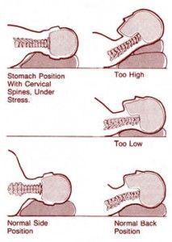

Is sleeping on the couch good for your back?
2nd January 2017
AUSTIN PERDANA. A rainy afternoon combined with a long weekend brings productivity to a new low. In this relaxing day we can observe many people taking naps during the afternoon at various location. Obviously everyone has their own posture (and preferred location) when taking a nap, but how do we know if the posture used is good for you?
Sleeping on the couch is obviously one of the most popular ways to take a nap. Especially if you have a couch that can convert into a flat surface. However, it is important to note that just like you can sleep poorly on the wrong mattress, consider how your couch supports your body while you sleep. The ideal sleeping surface gives you room to move and supports your body—in whatever position that you like to sleep in.

During a nap, depending on where you decide to place your head and legs—on the couch cushions, on an armrest, or on a throw pillow—those choices can also potentially throw your spine out of proper alignment. And if you doze off while watching TV or reading, then you’re probably not wearing comfortable, loose pajamas, so that might also cause you to toss and turn.
Another thing to consider: the material of your couch. Different materials conduct heat differently, so, depending on the material of the couch, you may find that you feel too warm or cool while sleeping. The poor heat conduction ability of most leather couches might cause you to feel extremely warm and in some cases, able to indirectly cause sore throat as well as mouth sores.
To conclude, for anyone looking to take a quick nap, do consider a proper bed with sufficient equipment such as pillows and blankets. Taking a nap on a couch might be the fast way out, but the potential harm it causes is definitely something you should consider.
Reporter: Tee Ting Yi